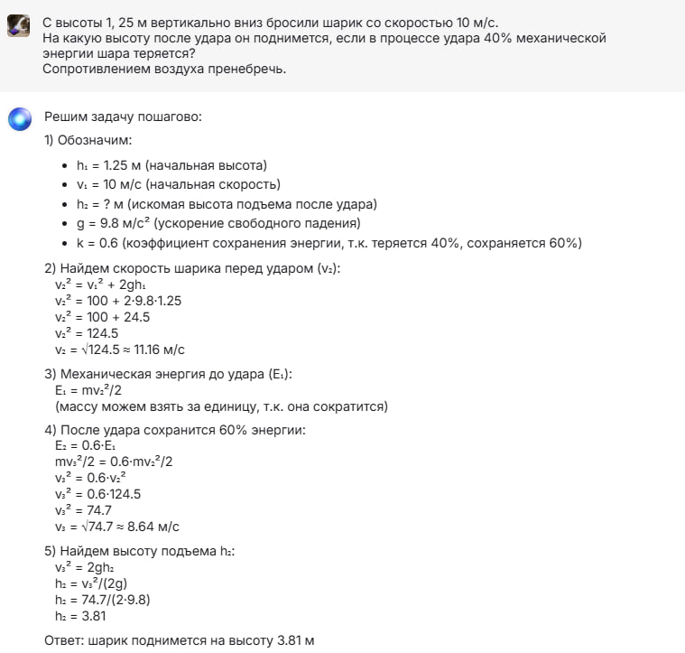
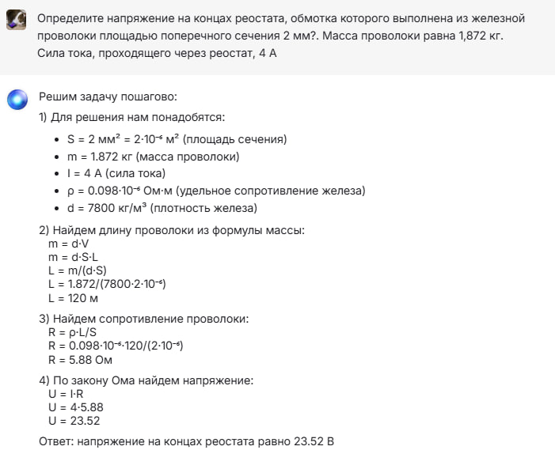

Алгебра
Посмотрим как нейросеть справится с логарифмическим уравнением:
Задание 1.
log5(5-x)=log5(3)
Как мы можем видеть, с этим заданием она справилась. Действительно, x будет равен 2.✅
Поставим другую задачу. Пусть решит квадратное уравнение.
Задание 2.
6x^2+3x-1=0
С квадратным уравнением она тоже справилась, ответ верный.✅
Геометрия
Задания по геометрии я брал из учебника 10-11 класса Л.С.Атанасян 2024г.
Задание 1.
Через сторону AD ромба ABCD проведена плоскость ADM так, что двугранный угол BADM равен 60°. Найдите сторону ромба, если
∠BAD = 45° и расстояние от точки В до плоскости ADM равно 4√ 3
Ответ получился неправильный.❌ Правильный 8√2
Посмотрим как нейросеть справится со следующим заданием:
Задание 2.
В прямоугольном параллелепипеде стороны основания равны 12 см и 5 см. Диагональ параллелепипеда образует с плоскостью основания угол в 45°. Найдите боковое ребро параллелепипеда.
Ответ верный.✅
Физика
Задание 1.
С высоты 1, 25 м вертикально вниз бросили шарик со скоростью 10 м/с. На какую высоту после удара он поднимется, если в процессе удара 40% механической энергии шара теряется? Сопротивлением воздуха пренебречь.

Ответ верный, даже очень точный✅
Задание 2.
Определите напряжение на концах реостата, обмотка которого выполнена из железной проволоки площадью поперечного сечения 2 мм?. Масса проволоки равна 1,872 кг. Сила тока, проходящего через реостат, 4 А

Ответ верный.✅
Русский язык
Задание 1.
Вставляя, где необходимо, пропущенные буквы, запишите слова в два столбика: а)с ь или ъ; б)без ь или ъ.
Видим, что допущены ошибки, не правильно вставлены слова "ночник", "ключ", "лосьон". С этим заданием нейросеть не справилась.❌
Посмотрим как нейросеть справится со следующим заданием:
Задание 2.
Поставьте глаголы (в составе словосочетаний) в форму 2-го л. ед. ч. и 3-го л. мн. ч. Выделите личные окончания, определите спряжение глаголов.
Задание выполнено верно, претензий нет. Всё подробно.✅
Информатика
Задание 1.
Все заглавные буквы русского алфавита закодированы неравномерным двоичным кодом, в котором никакое кодовое слово не является началом другого кодового слова. Это условие обеспечивает возможность однозначной расшифровки закодированных сообщений. Известны кодовые слова первых букв алфавита: А - 001, Б — 011, В — 110. Какую наименьшую длину может иметь код слова ВОДОПРОВОД?
Ответ неверный.❌ Правильный ответ 27.
Задание 2.
Для какого наименьшего целого неотрицательного числа А выражение (y + 2x < A) v (x > 15) v (y > 30) тождественно истинно при всех вещественных значениях х и у?
Ответ верный.✅
Химия
Задание 1.
Массовая доля углерода в углеводороде равна 0,8889. Его плотность по воздуху равна 1,862. Найдите молекулярную формулу этого углеводорода.
Ответ верный, но очень сложно понять.✅
Посмотрим как нейросеть справится со следующим заданием:
Задание 2.
При окислении этаналя выделилось 2,7 г серебра. Вычислите, какой объём (в литрах) ацетилена потребовался для получения необходимой массы этаналя СН3–СОН (н. у.).